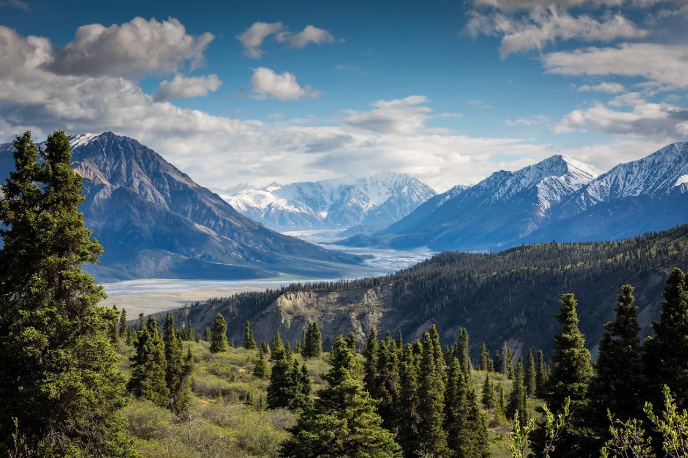
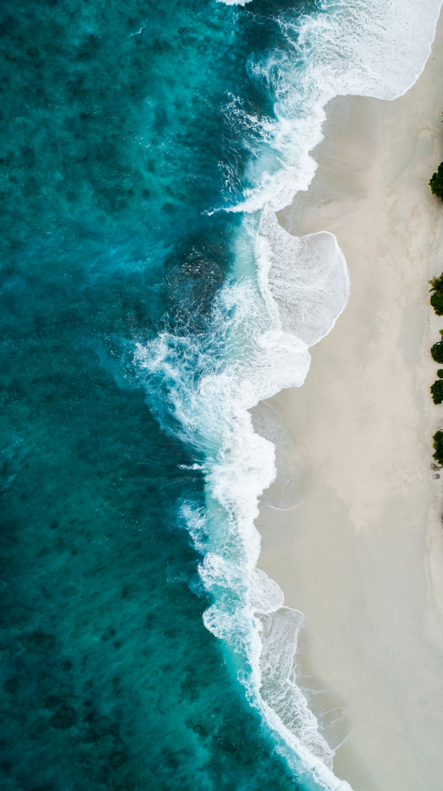
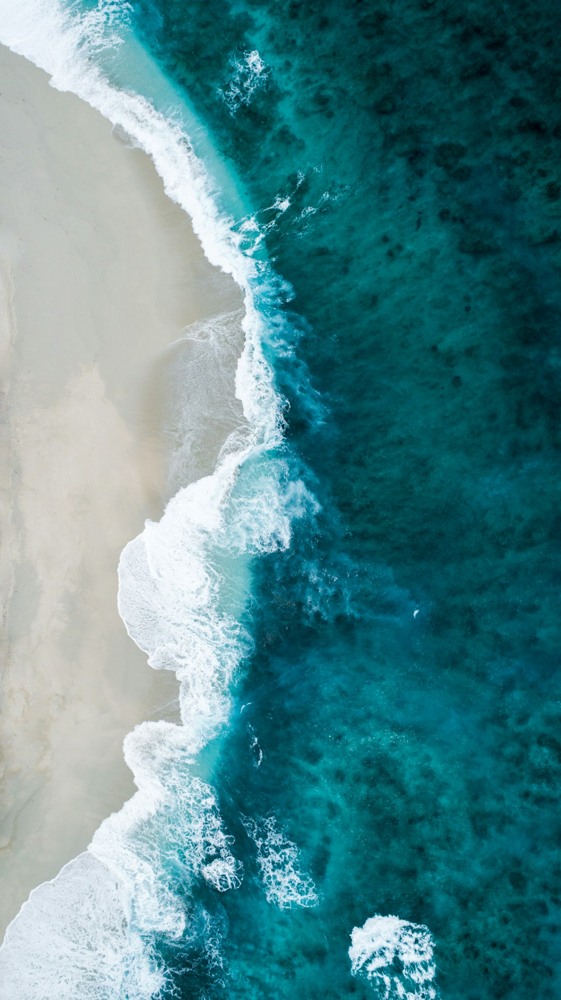
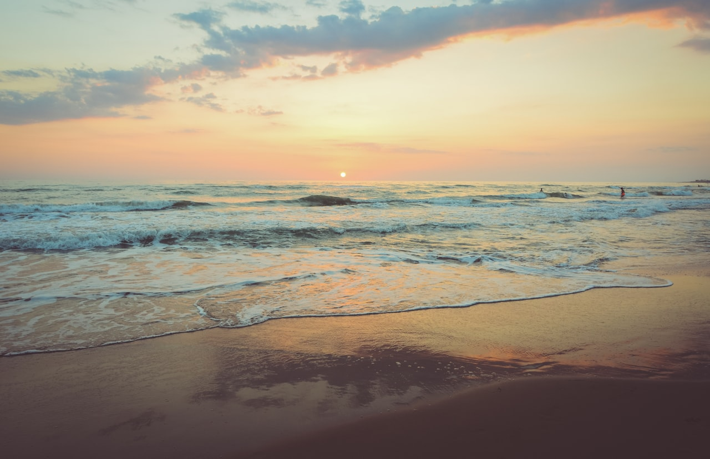
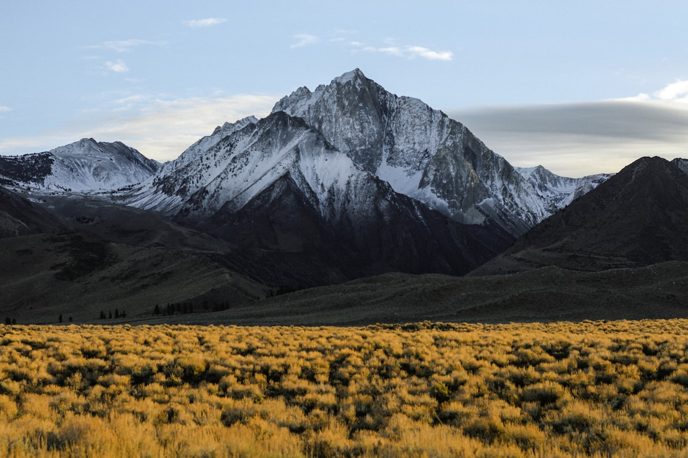

Day 4
Cadillac + Ocean Path + Gorham
Timing
| Time | Activity |
|---|---|
| 3:30 AM | Wake up — grab coffee and layers |
| 4:00 AM | Leave hotel for Cadillac Summit Road |
| 4:30 AM | Arrive summit — find a viewing spot (reservation required) |
| 5:15 AM | Sunrise on Cadillac Mountain |
| 6:30 AM | Descend; breakfast in Bar Harbor or at hotel |
| 8:30 AM | Ocean Path — Sand Beach to Otter Point (~2.2 mi) |
| 11:00 AM | Sand Beach break / snack |
| 1:00 PM | Lunch & rest at hotel |
| 3:00 PM | Optional Gorham Mountain loop (~3.5 mi) — or skip if tired |
| 6:00 PM | Early dinner — recovery night |
Reservation required
Cadillac Summit Road vehicle reservation
A timed vehicle reservation is required for Cadillac Summit Road — separate from your Acadia entrance pass. Without it, you cannot drive to the summit during the reservation period.
Parking
Where to park
- Cadillac Summit: Use your reserved entry window; limited summit parking.
- Sand Beach lot: Fills early — arrive before 8 AM or use the free Island Explorer shuttle.
- Gorham Mountain: Park at Gorham Mountain trailhead or Bubble Pond lot.
Plan
Pre-dawn
Cadillac Mountain sunrise
- First sunrise in the United States (at certain times of year) — worth the early alarm.
- Bring warm jackets, hats, and blankets — summit is windy and cold even in August.
- Arrive within your reservation window; stay for golden light after the sun clears the horizon.
Morning
Ocean Path (~2.2 mi, Sand Beach → Otter Point)
- Sand Beach: Acadia's only sandy swim beach — chilly water, beautiful setting.
- Thunder Hole: Watch waves crash into the sea cave — best 1–2 hours before high tide.
- Monument Cove: Iconic sea stack and arch — great photo stop.
- Otter Cliff: Dramatic pink granite cliffs plunging into the Atlantic.
- Island Explorer shuttle is a good option if Sand Beach parking is full.
Afternoon
Optional Gorham Mountain (~3.5 mi loop)
- Moderate loop with open summit views over the coast.
- Avoid Cadillac Cliff ladders — stick to the standard Gorham loop route.
- Skip entirely if the family is wiped from sunrise + Ocean Path — no guilt, great day already.
Trails
Ocean Path Trail
Mostly flat coastal walk with stunning views. Can do out-and-back or one-way with shuttle.
View on AllTrailsGorham Mountain Loop
Rocky ascent to open summit. Skip Cadillac Cliff section with kids — use the standard loop.
View on AllTrailsPhoto Gallery





Videos
Ocean Path Trail Guide
Top 5 Things in Acadia
Confirm before you go
Before leaving tonight
- Check tomorrow's tide times if planning Bar Island (Day 5 optional).
- Review Bubble Rock parking — early start recommended.
- Hydrate and sleep — today was the big endurance day.